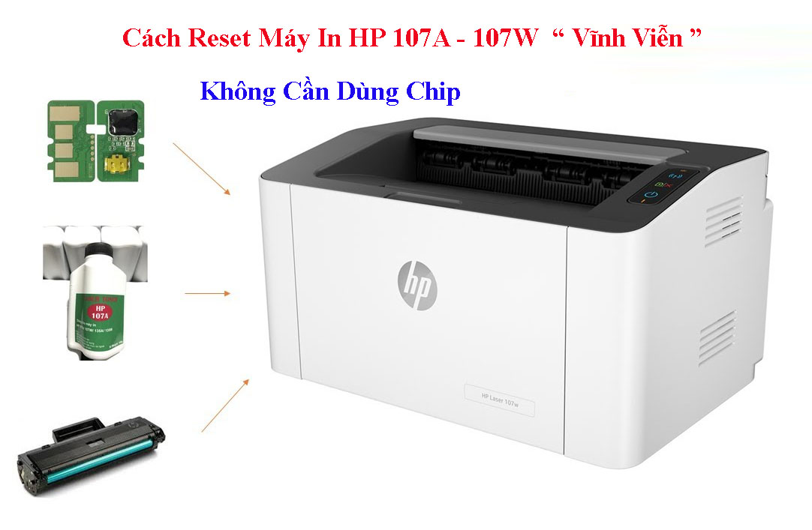
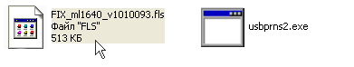

Mực in Trường Phát nhận reset máy in HP 107A, HP 107W, HP 135A, HP 135W, HP 135FW, HP 137A, HP 137W tận nơi tại TPHCM. 450.000đ/máy . Nếu khách hàng mang thiết bị đến cửa hàng để thực hiện, phụ thu thêm 50.000đ .
Các dòng máy in HP 107A, 107W, 135A, 135FW, 137A, 137W là những dòng máy in laser phổ biến, giá thành rẻ và sử dụng hộp mực HP 107A có gắn chip mực . Sau một thời gian sử dụng, máy in thường xuất hiện các thông báo như Toner Low, Toner End, Change Toner hoặc đèn đỏ nhấp nháy và không cho phép tiếp tục in, dù hộp mực đã được nạp đầy.
Nguyên nhân là do chip mực đã hết số lần sử dụng , khiến máy in nhận diện hộp mực đã hết. Vì vậy, để tiếp tục sử dụng sau khi nạp mực, cần tiến hành reset máy in hoặc thay chip mực để máy hoạt động bình thường trở lại.

Cách Reset Máy In Hp 107A / Hp 107W
Giới thiệu về thông số và chức năng máy in HP 107W
Khổ giấy: A4/A5
In đảo mặt: Không
Cổng giao tiếp: USB/ WIFI
Dùng mực: HP 107A Blk Original Laser Toner Crtg_W1107A ~1000 bản in theo tiêu chuẩn Hãng
Máy in Hp 107A – 107W báo lỗi toner low
Hộp mực máy in Hp 107W sửa dụng hộp mực 107A có gắng chíp nhớ sau khi sử dụng một thời gian thì máy báo lỗi đèn đỏ, đèn cảnh báo và không cho in nữa và hiện thông báo toner low – điều này có nghĩa là máy in thông báo hộp mực đã hết sử dụng được và cần phải thay thế hộp mực mới.
Giải pháp là ta phải thay thế hộp mực mới, hoặc gắng chíp mới và nạp lại mực cho máy in hp 107w , Tuy nhiên hiện nay trên thị trường chíp Hp 107A có giá đắt đỏ và không tương xứng với máy in. Cũng như giá 1 hộp mực hp 107a là khá cao.
Vậy làm thế nào để có thể sử dụng tiếp tục và với chi phí rẻ hơn. Giải pháp là chúng ta reset lại cho máy in Hp 107a , và cách reset chip nhớ máy in vĩnh viễn mà không cần phải dùng đến chíp mực. Sau đây Tin Học Nam Phong xin chia sẻ cách reset máy in HP 107w vĩnh viễn.
Các dấu hiệu cảnh báo cần phải reset mực cho máy in HP 107W
Máy in HP 107A / 107W nhấp nháy đèn mực (toner)
Đèn chấm thang trên máy sáng đỏ, nhấp nháy liên tục và không cho in nửa
Máy in không in được và trên máy tính báo toner low
Cách reset chip máy in Hp 107A – HP 107W
Bước 1 : Tắt nguồn máy in, láy hộp mực ra và dùng băng keo giấy dán chip hộp mực lại
Bước 2: Gắng hộp mực lại vào máy in và nguồn máy in vẫn đang tắt
Bước 3: Nhấn và giữ im nút X màu đỏ
Bước 4: Lúc này ta nhấn nút mở nguồn máy in ( Nút X màu đỏ vẫn đang giữ cùng lúc với nút nguồn )
Bước 5: Nút X và nút nguồn vẫn đang giữ và ta đếm 12 giây
Bước 6: Sau khoản 12 giây ta thả nút nguồn ra và nhấn nút nguồn lại 1 lần nữa
Bước 7: Sau khi máy in sáng đèn thì ta thả đồng thời 2 nút ra
Xem hình ảnh và Video hướng dẫn reset hp 107W bên dưới.
Cách Reset máy in Hp 107A – HP 107W | vĩnh viễn không cần dùng chip
Trước khi reset máy in hp 107A, Hp 107W các bạn cần chú ý. Cài đặt driver cho máy in đầy đủ, đảm bảo cáp usb kết nối ổn định, rút cáp usb của các máy in khác (nếu có)
Tải phần mềm reset HP 107A
Kéo File “Fix” thả vào file usbprns2
Lúc này trên máy tính chạy thông báo và máy in cũng đang được reset
Sau khi máy chạy xong, chúng ta tắt máy in đi và lấy hộp mực ra khỏi máy
Tiến hành gở bỏ chip trên hộp mực và gắng lại vào trong máy.

Phần mềm reset Hp 107w
Như vậy là các bạn đã hoàng thành quá trình reset máy in Hp 107A, HP 107W vĩnh viễn và không cần phải gắng chíp trên hợp mực. Lưu ý quá trình reset không được để máy in mất kết nối với mới tính
Nhận Reset Chip Mực Máy In HP 107A / Hp 107W / HP 135A/W / HP 137A/W
Mực in Trường Phát nhận reset máy in hp 107A – 107W – Hp 135A, Hp 135ww – Hp 137A, HP 137W tận nơi giá rẻ
Giá reset tại công ty Trường Phát
450k/ máy 107a-107w mọi phiên bản 600k/ máy 135, 137 mọi phiên bản
Quý khách không cần ôm máy đi, kỹ thuật tới bung máy làm tại chổ thêm 50k phí dịch vụ.
Nhận reset tất cả các phiên bản version khác nhau, kễ cả phiên bản Version 10, 11, 12, 13, 14, 15 …
Lý do phải reset chip máy in Hp 107A : Với dòng máy in sử dụng hộp mực 107A sau một thời gian sử dụng tới giới hạng trang in thì máy in báo toner low và không cho in nữa. Giải pháp là phải thay thế hộp mực mới – có giá thành tương đối cao. Chính vì vậy để tiết kiệm chi phí thì giải pháp reset máy in hp 107w Vĩnh viễn và loại bỏ chíp trên hộp mực.
Ưu điểm thứ 2 : khi các bạn đã reset chip máy in hp 107a rồi thì sau này ta thay thế hộp mực khác thì không cần phải mua hộp mực có chip. Vì vậy giá thành sẻ rẻ hơn rất nhiều
Mực in Trường Phát tại TP HCM nhận reset máy in hp 107A – 107W – Hp 135A, Hp 135ww – Hp 137A, HP 137W . Nhận reset tất cả các phiên bản version khác nhau, kễ cả phiên bản Version 10, 11, 12, 13, 14, 15 …
Quý khách hàng tại TPHCM cần hỗ trợ reset vĩnh viễn máy in hp 107a – Hp 107w – 135a – 137w … Có thể liên hệ Tel : 0908327123 – Hoặc Nhắn tin Zalo : 0908327123 – 0909007800
Hỗ trợ online tại tất cả các tình thành
Quy Trình Hỗ Trợ Reset Máy In HP 107A như sau
Đầu tiên các bạn in bản Version máy in sau đó chụp hình gởi Zalo qua số : 0908327123. Chúng tôi sẻ tư vấn các bạn một cách chi tiết nhất. Tham khảo cách in Version máy in các dòng như sau
Bước 1 : Đối với dòng máy in Hp 107A – 107W : các bạn nhấn và giữ im nút màu xanh khoản 10s, cho đến khi đèn nguồn nhấp nháy thì hãy thả tay ra và máy in sẻ tự động in bản Version.
Xem video hướng dẫn cụ thể
Bước 2 : Để có thể tiến hành reset được máy in Hp 107A, Hp 135a, Hp 137w thì ta cẩn phải đưa máy in về chế độ download mode – Cách làm như sau:
+ Cách vào download mode máy in Hp 107A
Tắt nguồn máy in – > sau đó nhấn dữ nút màu xanh – > Mở nguồn máy in lên (trong khi vẫn đang nhấn dữ nút xanh ) – > Tiếp theo thả cả 2 nút ra